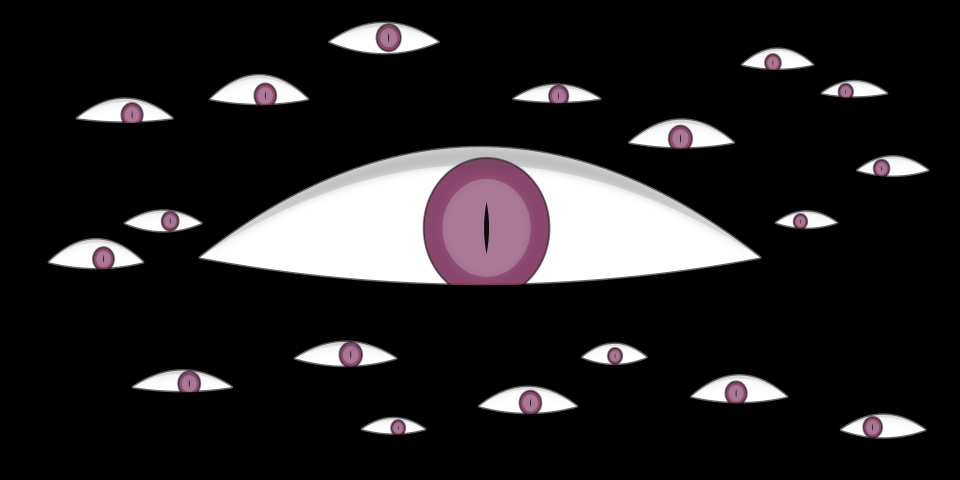

<div class="noscript" >Enable Javascript to get the most out of our site</div>
.net
Web Developer PHP Symfony 2
Firas Barrek Website
Since 2017
Home
About
Some Facts
Experience
Projects
Contact

We're sorry, but the page you're looking for can't be found
You might try starting at our
home page
404 page built by
firas barrek